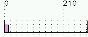

![[LinuxFocus Image]](../../common/May1998/border-short.jpg)
| Noticias Archivos Compañías Consejos y Trucos |
Real-Time Linux (RT-Linux)por Ismael Ripoll |
¿Qué es Tiempo-Real?
S.O. y Tiempo-Real
Futuro de RT-Linux
Conclusiones
|
Introducción a los conceptos básicos de Tiempo-Real (TR). Tiempo real estricto con RT-Linux. ¿Qué es Tiempo-Real?Antes de presentar RT-Linux es necesario aclarar algunas ideas sobre qué es Tiempo Real. Diremos que:"Un sistema de tiempo real es aquel sistema informático en el que la corrección del sistema no sólo depende de los resultados lógicos de los algoritmos, sino que también depende del momento en el que estos se producen." No es suficiente que los resultado obtenidos sean correctos, sino que tienen que tienen que obtenerse dentro de un intervalo de tiempo especificado. Observa que de esta definición no se deduce que un sistema de tiempo real tenga se ser necesariamente rápido, como quizás se pudiera pensar. Por ejemplo: el sistema de guiado de un barco pude parecer en principio que no es de tiempo real, pues la velocidad del barco es relativamente baja y normalmente se dispone de "bastante" tiempo (del orden de algunos minutos) para tomar las decisiones de control. Pero sí que es un sistema de TR según la definición anterior. Observa que lo que he definido es un sistema "de tiempo-real" y no un sistema "en tiempo-real". Un sistema "en tiempo-real" es lo que normalmente se entiende por un sistema rápido, capaz de dar la impresión de "realidad". Típicamente todas las simulaciones y juegos interactivos quieren dan la impresión de continuidad en el tiempo y cuantas más imágenes generen mejor. Vamos a ver con un poco más de detalle qué se entiende por "restricción temporal". Supon que queremos controlar la velocidad de un motor que está sometido a una carga variable, supongamos también que ese control lo queremos realizar utilizando un control PID (Proporcional, Integral, Derivativo). El control PID desde nuestro punto de vista es una función a la que se le pasan unos parámetros --en este ejemplo, la velocidad actual del motor-- y retorna el valor de la señal de control que hay que aplicar al motor --la tensión con la que hay que alimentar el motor. La teoría, que por cierto es mucha, que hay detrás del diseño de los algoritmos PID supone que el tiempo de cómputo es despreciable, esto es, desde que se lee la velocidad del motor hasta que se actúa pasa muy poco tiempo. Normalmente se puede tolerar un cierto retraso. Otra característica de este tipo de control es que se debe realizar de forma periódica, esto es, el algoritmo PID se tiene que ejecutar regularmente. Si entre dos invocaciones consecutivas a la función PID pasa demasiado tiempo, entonces el motor puede alcanzar una velocidad no deseada. En resumen: podemos considerar la función PID como un programa que se ha de ejecutar de forma periódica (Pi); desde que la ponemos en ejecución hasta que acaba ha de estar acotado por lo máximo que viene impuesto por la teoría de diseño del PID (Di) y que en función de la velocidad del procesador que tengamos el tiempo de ejecución del propio código PID emplea una cantidad de tiempo (Ci). Los problemas de TR aparecen cuando el sistema está compuesto por varias tareas, y hay que repartir el procesador (o procesadores) entre todas ellas. Para ello no podemos utilizar un sistema clásico de tiempo compartido como puede ser el utilizado por Linux con los procesos normales. No en necesario decir que ni se te ocurra hacer programas que requieran tiempo real en Windows... Un consejo aún mejor: no hagas ningún programa bajo ese producto.
No todos los sistema de tiempo real son iguales, no es lo mismo controlar el sistema de frenado ABS de un coche o la inyección de combustible en el motor de un avión, que la descompresión y visualización de un fichero mpeg. En el primer caso, la perdida de algún plazo de ejecución puede producir perdidas humanas o graves perdidas materiales; en el segundo caso, sencillamente se tiene una degradación de la calidad del sistema (la imagen se queda congelada o se pierde algún fotograma). A los primeros se les llama sistemas de tiempo real estricto (hard real-time) y a los segundo sistemas de tiempo real blando (soft real-time). Nos centraremos en el estudio de los sistemas de tiempo real estricto. El diseño de un sistema de tiempo real pasa por varias fases. Primero se identifican las tareas a realizar y las restricciones temporales que deben cumplir; luego se escriben los programas que ejecutarán las tareas; después se mide el tiempo de cómputo de cada tarea y se realiza un análisis de planificabilidad. El análisis de planificabilidad consiste en aplicar unas pruebas al conjunto de tareas de tal forma que si éstas pasan el test entonces se puede garantizar que ninguna tarea perderá su plazo de ejecución. Si no pasan el test entonces se tiene que volver al principio y empezar de nuevo, utilizando otro procesador más potente o utilizando otros algoritmos para implementar las tareas. Resumiendo: Las tareas se modelan con tres números: P, D y C. El objetivo del sistema es garantizar que todas las tareas (en todas sus activaciones) cumplan sus plazos de ejecución. La forma de conseguirlo es teniendo un sistema predecible. Decir que un sistema es de tiempo real o que es un sistema es predecible es decir casi lo mismo. ¿Qué tiene que ver el Sistema Operativo con el Tiempo-Real?La corrección semántica de la respuesta es responsabilidad del programador, y la corrección temporal depende del sistema operativo (S.O.).Es el S.O. el que tiene que dar soporte y organizar la ejecución de todas las tareas, es también labor del S.O. el gestionar las interrupciones. El S.O. ha de ofrecer:
Al contrario que sucede en los S.O. "normales", el objetivo en los S.O. de tiempo real es minimizar la complejidad para minimizar la inceridumbre (falta de predecibilidad). No se quiere un S.O. que haga muchas cosas, sino uno lo haga de forma predecible y rápida. Es preferible un S.O. que normalmente tarde 10 unidades de tiempo (u.t.) en realizar un cambio de contexto y que en el peor de los casos tarde 12, que otro S.O. que por término medito tarde 3 u.t. pero que de cuando en cuando necesite 20 u.t. No hay que sorprenderse si descubrimos que los sistemas operativos de tiempo real son más "lentos" que los S.O. normales. En ocasiones, para obtener un comportamiento predecible, se puede llegar incluso a deshabilitar la memoria cache, con la consiguiente perdida de velocidad. La memoria cache, los procesadores con unidades pipeline y los algoritmos de predicción de saltos son claros enemigos de la predecibilidad y por tanto de los sistemas de tiempo real.
Extensiones POSIX de TR.POSIX son la iniciales de Portable Operating System Interface (Y ¿qué es un S.O. sin la X al final?). Es un estándar que pretende conseguir la portabilidad del software al nivel del código fuente. En otras palabras: un programa escrito para un S.O. que sea compatible con POSIX ha de poderse compilar y ejecutar sobre cualquier otro "POSIX" aunque sea de otro fabricante distinto. El estándar POSIX define la interfaz que el S.O. debe ofrecer a las aplicaciones: el juego de llamadas al sistema. POSIX está siendo desarrollado por IEEE (Institute of Electrical and Electronic Engineering) y estandarizado por ANSI (American National Standards Institute) e ISO (International Standards Organization). Evidentemente POSIX está basado en UNIX. La mayor parte de los S.O. (incluido el Windows NT) tienden en sucesivas versiones hacia la compatibilidad POSIX.
El trabajo en la definición del estándar POSIX está dividida en varios grupos de trabajo en los que participan fabricantes de ordenadores, empresas de software, representantes de distintos gobiernos y gurús de la informática. Cada grupo se encarga de diseñar un aspecto del S.O.. Por ejemplo: el grupo llamado POSIX.4 se encarga de las cuestiones relativas a tiempo real. Las extensiones POSIX.4 --renombradas como 1003.1b desde 1993-- permiten que un S.O. se pueda utilizar en situaciones que requieran tiempo real. Evidentemente, la mayor parte de estas extensiones están relacionadas con la gestión del tiempo y las prioridades de los procesos, también hay llamadas al sistema para facilitar la comunicación entre procesos. Las extensiones POSIX están pensadas para tener un mayor control sobre la administración de los recursos del S.O.. Linux 2.0 tienen implementadas bastantes llamadas al sistema de las extensiones POSIX de tiempo real... pero este aspecto de Linux lo contaré en otro artículo. En la versión 2.2, casi con toda seguridad, Linux será 100% compatible POSIX 1003.1b. Real Time LinuxHa sido desarrollado en el departamento de informática en el Instituto de Minería y Tecnología de Nuevo México, por Victor Yodaiken y Michael Barabanov. RT-Linux fue el trabajo de Michael para completar su Master of Computer Science in Computer Science (algo así como el proyecto fin de carrera). La última versión disponible es la 0.6. Por ahora sólo está disponible para la arquitectura Intel. RT-Linux resuelve el problema de una forma radicalmente distinta. En lugar de modificar el núcleo de Linux para ofrecer nuevas llamadas al sistema y que sea predecible, lo que hace es construir directamente sobre el procesador (i386) un pequeño núcleo --que no tiene nada que ver con el núcleo de Linux-- con un planificador. Sobre este núcleo el S.O. Linux se ejecuta como una tarea más. Linux se ejecuta compartiendo el procesador con otras tareas. Más concretamente: Linux se ejecuta en background, cuando no hay otras tareas que ejecutar. Me imagino que se te han roto todos los esquemas... quizás pensabas que el S.O. era todo poderoso y que no se podía jugar con él.
El código del kernel de Linux (como cualquier S.O.) suele deshabilitar las interrupciones como medio de sincronización o para implementar secciones críticas. Si mientras Linux tiene deshabilitadas las interrupciones se produce una interrupción de reloj, ésta quedará bloqueada; con la consiguiente perdida de precisión temporal. En RT-Linux se ha implementado una solución muy elegante: se ha sustituido todas las llamadas a cli, sti e iret (instrucciones ensamblador que modifican el estado de las interrupciones) por S_CLI, S_STI y S_IRET que las emulan, de forma que Linux no puede nunca deshabilitar las interrupciones. El planificador por defecto que viene con RT-Linux es un planificador basado en prioridades estáticas y trata a la tarea Linux como la tarea de menor prioridad. Si las tareas de tiempo real consumen todo el tiempo del procesador, entonces la tarea Linux no recibe tiempo de procesador y da la impresión de que el sistema se ha"colgado". Con RT-Linux tenemos a la vez un sistema de tiempo real y un S.O. clásico. Podemos navegar por la red a la vez que estamos muestreando y controlando un proceso físico. Instalación de RT-LinuxLos ficheros de la distribución los podemos encontrar en: http://luz.cs.nt.edu/~rtlinux. Para "transformar" a Linux en RT-Linux hay que aplicar al código del kernel un parche que viene con la distribución de RT-Linux y luego recompilar el kernel. Aquí está la receta para hacerlo. Supongo que has bajado el fichero rtlinux-0.6-2.0.33.tgz al directorio /usr/src y lo has extraído en ese mismo directorio, con lo que ahora los fuentes están en /usr/src/rtlinux-0.6. También supongo que ya has configurado todas las opciones del kernel (make config). # cd /usr/src/linux # patch -p1 <../rtlinux-0.6-2.0.33/kernel_path # make dep; make clean; make zlilo; make modules; make modules_install # rebootEl nuevo núcleo es, en apariencia, igual que uno normal, pero está preparado para convertirse en un sistema de tiempo real. Dentro del directorio /usr/src/rtlinux-0.6-2.0.33/testing hay varios programas de demostración. Aparte del ejemplo de sonido que viene con la distribución (dentro del directorio testing), se puede bajar otro ejemplo preparado por Oleg Subbotin que permite crear un cronograma de la ejecución de las tareas. Uno de los ficheros que viene en esta demo es un planificador con las modificaciones necesarias para que a la vez que realiza la planificación, envíe información sobre las decisiones que va tomando. Esta información es recogida y almacenada en un fichero que posteriormente puede ser visualizada gráficamente. Como resultado podemos ver en qué orden se han ejecutado las distintas tareas, y como la tarea más prioritaria expulsa a la menos prioritaria. La tarea Linux no parece representada.
Cada tarea está representada sobre un eje horizontal. Los rectángulos representan tiempos en los que cada tarea está utilizando el procesador (en un instante dado, sólo una tarea puede estar en ejecución, pues estamos en un sistema monoprocesador). En este ejemplo, el deadline de cada tarea es igual a su periodo; el periodo de cada tarea está enmarcado por un intervalo temporal representado por: ,dentro del cual debe ejecutarse. Las tareas de arriba tienen mayor prioridad y son capaces de expulsar del procesador a otras de menos prioridad, como ocurre en el instante 600. El Futuro de RT-LinuxYa está disponible una versión de RT-Linux para multiprocesador. Los servicios que ofrece RT-Linux son intencionadamente mínimos, no se quiere incluir ninguna funcionalidad que no sea estrictamente necesaria con el fin de mantener al sistema lo más predecible posible. De todas formas, hay disponibles varias ampliaciones para trabajar con semáforos y para poder acceder a las tareas de tiempo real desde los procesos Linux mediante /proc/sys. Hace pocas semanas, se ha comenzado ha escribir un completo manual-tutorial de RT-Linux. ConclusionesAntes de aparecer el RT-Linux la mayor parte de los ingenieros que necesitaban trabajar con sistemas de tiempo real tenían que o bien utilizar el MS-DOS y tener que construirse todos los drivers que necesitaban, o bien comprar un S.O. de tiempo real (a unos precios poco atractivos). Ahora se dispone de todo un completo S.O. para desarrollar las aplicaciones de tiempo real y sobre el mismo sistema que se van a ejecutar. De hecho, podemos tener simultáneamente varias tareas de tiempo real en ejecución y estar navegando por la Internet sin problemas. En el siguiente artículo veremos varios ejemplos de aplicaciones de tiempo real y cómo escribir nuestras propias aplicaciones de tiempo real. Artículo original en Castellano
|
Esta página está mantenida por Miguel A Sepulveda.